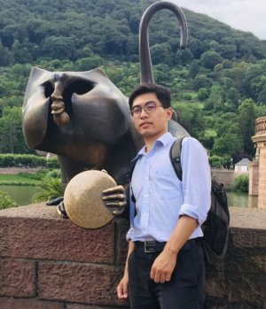

 |
Associate Researcher
Email: zhouyou@nju.edu.cn or zhouyou2976@126.com
Room 342, Electronic (Panzhonglai) Building, Xianlin Campus |
|
I am currently an Associate Researcher (from March 2019 to now) in School of Electrical Science and Technology, Nanjing University, China. I am leading a group of 3 students working on Computational Optics and Microscopy in Computational Imaging Technology & Engineering Lab led by Prof. Xun Cao.
My research interests focus on developing novel and miniaturized microscopes (lensless microscope, light-field microscope and micro--endoscope) and optimizing the optical design of microscopes by using deep optical techniques. For students who are interested in our research area, welcome to join us. |
- Ph. D. 2012.08 – 2019.01, Department of Automation, Broadband Network and Digital Media Lab (BBNC), Tsinghua University, Beijing, China. Supervisor: Prof. Qionghai Dai.
- Visiting Student. 2016.12 – 2017.06, Smart Imaging Lab, Biomedical Engineering Department, University of Connecticut (Uconn), Storrs, Connecticut, USA. Supervisor: Prof. Guoan Zheng.
- Bachelor of Science. 2008.09 – 2012.07, Department of Communication Engineering, East China Normal University, Shanghai, China.
- Minor Degree. 2009.09 – 2012.02, School of Mathematical Sciences, Shanghai Jiaotong University, Shanghai, China.
|
| Publications (* Joint first author) |
2021
- Lu C*, Zhou Y*, Guo Y*, Jiang S, Zhang Z, Zheng G, and Zhong J. Mask-modulated lensless imaging via translated structured illumination. Optics Express (OE), 2021, 29(8), 12491-12501.
- Xiong B, Li X, Zhou Y, Wang L, Wu J, and Dai Q. Snapshot Partially Coherent Diffraction Tomography. Physical Review Applied (PRA), 2021, 15(4), 044048.
2020
- Zhou Y*, Xiong B*, Li X, Dai Q, and Cao X. Lensless imaging of plant samples using the cross-polarized light. Optics Express (OE), 2020, 28(21).
- Zhou Y*, Hua X*, Zhang Z, Hu X, Dixit K, Zhong J, Zheng G, and Cao X. Wirtinger gradient descent optimization for reducing Gaussian noise in lensless microscopy. Optics and Lasers in Engineering (OLEN), 2020, 134.
- Hua X, Cai Yue, Zhou Y, Yan F, and Cao X. Leukocyte super-resolution via geometry prior and structural consistency. Journal of Biomedical Optics (JBO), 2020, 25(10).
- Zhou Y, Hua X, Song W, and Cao X. A novel denoising reconstruction algorithm for multi-height lensless microscopy. Biophotonics Congress: Biomedical Optics, Optical Society of America, Washington D.C., USA 2020.
Before 2020
- Lu Z, Wu J, Qiao H, Zhou Y, Yan T, Zhou Z, Zhang X, Fan J, and Dai Q. Phase-space deconvolution for light field microscopy. Optics Express (OE), 2019, 27(13).
- Zhou Y, Zhang G, Wu J, Choi M, and Dai Q. Wavefront shaping for achieving high NA GRIN-lens-based endoscopic imaging. Biophotonics Congress: Optics in the Life Sciences, Optical Society of America, Arizona, USA, 2019.
- Zhou Y, Wu J, Suo J, Han X, Zheng G, and Dai Q. Single-shot lensless imaging via simultaneous multi-angle LED illumination. Optics Express (OE), 2018, 26(17).
- Zhang Z*, Zhou Y*, Jiang S, Guo K, Hoshino K, Zhong J, Suo J, Dai Q, and Zheng G. Invited Article: Mask-modulated lensless imaging with multi-angle illuminations. APL Photonics, 2018, 3(6).
- Zhou Y, Wu J, Bian Z, Suo J, Zheng G, and Dai Q. Fourier ptychographic microscopy using wavelength multiplexing. Journal of Biomedical Optics (JBO), 2017, 22(6).
- Zhou Y, Wu J, Bian Z, Zheng G, and Dai Q. Wavelength multiplexed Fourier ptychographic microscopy. Computational Optical Sensing and Imaging (COSI), Optical Society of America, Heidelberg, Germany, 2016.
- Wang X, Zhang Q, Zhou Y, Qian J, and Zou H. Linear canonical transform related operators and their applications to signal analysis—Part I: Fundamentals. Chinese Journal of Electronics, 2015, 24(1).
- Wang X, Zhang Q, Zhou Y, Qian J, and Zou H. Linear Canonical Transform Related Operators and Their Applications to Signal Analysis—Part II: Applications. Chinese Journal of Electronics, 2015, 24(2).
|
| Reviewer of OSA Journals (Optica, Optics Express, Optics Letters, APL Photonics, Biomedical Optics Express, Applied Optics, JOSA A), and IEEE Transactions on Circuits and Systems for Video Technology (TCSVT). |
Doctor of Innovation and Entrepreneurship, Jiangsu Province, China, 2020
Short-term Overseas Exchange Scholarship of Tsinghua University, 2016
Best Oral Presentation in the PhD Forum of Tsinghua University, 2015
Excellent Laboratory Construction Award of Tsinghua University, first prize, 2015
Technological Invention Award of Shanghai University Student, third prize, 2012
Technological Invention Award of East China Normal University, first prize, 2011
Excellent Student of East China Normal University, 2010
Outstanding Student Scholarship of East China Normal University (3 times), 2008-2012 |
|